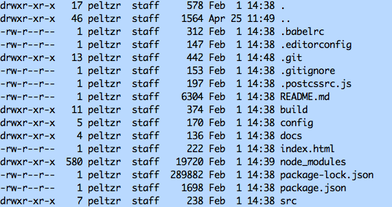

This FAQ answer the question "How to add an admin user to Wordpress using mySQL?"
If you navigate to <url to wordpress>/wp-admin and find that you have updates to process, you should be able to run them with the click of a button. Sometimes these will fail due to inadequate permissions granted to directories and files that the update process needs to do its job.
You can view Unix permissions for each file and directory by running ls -la. The output will resemble what is shown below:

Unix assigns Read (r), Write (w),and Execute (x) permissions to each object and directory objects have a (d) in front of the permission string. The rwx are grouped by owner, group, other. The rwx strings can be replaced by an Octal value that represents the sum of the permissions applied to an object. See this website, permissions-calculator, to see how changing the octal value changes the value of the read, write, execute properties.
The chmod command allows you to change the permissions on an object. If I want to enable all permission on a object I could issue the command chmod 777 <filename. In order to allow Wordpress to successfully update I used chmod 775 on the following directories and files under the Wordpress installation. You should cd to /var/www/html before you execute these commands.
If you wanted to "loosen" permissions on everything - all files and directories - under a given directory the command is:
chmod -R 775 html
The -R means recursively apply the 775 to all files and directories under the html directory. For example, if you find you still can't install with the directed chmod command above, you can navigate to the directory above the server root and then set all files and directories under the server root to allow the user to write with the following commands:
cd /var/www
chmod -R 775 html
When adding permissions to any application, such as Wordpress, you alway want to give just enough but not to much access. You can read about the Least Privilege Principle here in the Hardening Wordpress document.